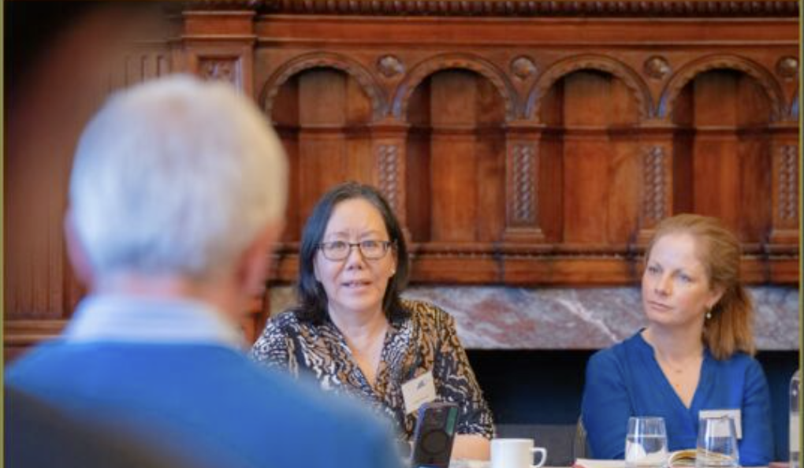

A lawyer by background, with over twenty years' experience working with leaders and teams across the public and private sectors — and a particular interest in what makes thinking, and the people doing it, genuinely flourish.
I began my career as a lawyer, with a particular interest in sustainability and pioneering campaigns on environmental justice. My interest in people and organisational culture led to a change of direction, and I went on to study Organisational Psychiatry and Psychology and train as a coach. That combination of skills — legal training, board-level experience in complex organisations operating under intense scrutiny, and a grounding in organisational psychology — gives me a particular insight into the challenges facing my clients.
I have now been supporting leaders and teams for over twenty years, across both the public and private sectors. My focus is creating environments in which leaders can access the wisdom, compassion and courage already within themselves and their teams — for the benefit of their organisation, and of society at large.
My work draws on a number of traditions that, for me, sit naturally together: Nancy Kline's Thinking Environment, systems thinking, the writing of Parker J. Palmer on leadership and the inner life, and the wider wisdom traditions. Each brings something different — but all point towards the same thing: that better thinking, and better leadership, begin with how we pay attention to ourselves and to each other.

Facilitating with Windsor Leadership
In 2011 I founded Fulcrum, a network bringing leaders together across sectors to think freely, away from the pressures of public life.
I have served as a Non-Executive Director in the NHS, and as an Ambassador for the International Integrated Reporting Council — a global coalition of regulators, investors, companies and NGOs working to transform how organisations create and report value. My leadership programmes draw on this experience, exploring culture, governance, inclusivity and the behaviours that help leaders meet the needs of all their stakeholders, in the short, medium and long term.
I sit on the Board of Public Finance by Women and on the Faculty of the NHS Leadership Academy, and I am a facilitator with Windsor Leadership. I hold an LLM in International Environmental Law (UCL) and an MSc in Organisational Psychiatry and Psychology (King's College London).
In 2010 I discovered Nancy Kline's Thinking Environment approach, and was drawn immediately to its depth — to how it lifts teams, organisations and individuals out of "stuckness", and creates the conditions in which everyone can think for themselves. I now teach Nancy's Foundation Course and Thinking Partnership Course, as well as the accredited coaching and facilitation programmes, and bring this approach — alongside the other traditions I draw on — into all of my work with clients.
"Mitzi is incredibly creative, well qualified and skilled in developing leaders. She's passionate about making the world a better place. Kind, insightful and supportive, she is able to challenge deep-seated assumptions and create an environment where important but tricky issues can be addressed. Not many can blend artistic talent with detailed knowledge of governance. Working with her is a delight."Elisabeth Buggins CBE, DL, Chair, Eastern Academic Health Science Network
If you'd like to explore how my experience — across the Thinking Environment, governance and leadership development — could help you, your team, or your organisation, book a short discovery call.
Book a discovery call